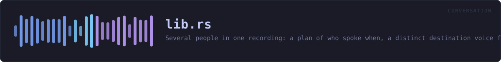

crates/veilvoice-conversation/src/lib.rs
veilvoice-conversation · 180 lines · read the source here · or on GitHub
Several people in one recording: a plan of who spoke when, a distinct destination voice for each of them, and subtitles that carry their names.
Why this exists
VeilVoice's whole argument is that every speaker is mapped onto one canonical voice, so many inputs give one output and there is no inverse to compute. Run an interview through it and both people come out as the same voice, which is perfectly private and completely unusable, because a listener cannot tell a question from its answer.
This crate keeps the property and fixes the usability. Each speaker is assigned a slot, each slot has its own canonical destination (veilvoice_core::voices), and every speaker in a slot is normalised onto that destination exactly as thoroughly as a lone speaker is normalised onto the default one. There are ten buckets instead of one; each is still many-to-one.
What a conversation costs, said plainly
- The number of speakers survives. Three voices in the output means three people were in the room.
- The turn-taking survives. Who spoke when, for how long, who interrupted whom, the rhythm of the exchange. That is preserved on purpose, since it is what makes the result worth listening to, and it is information about the conversation.
- Names are whatever you type. A subtitle saying "Alex" contains the string "Alex". The audio is veiled; a caption is not, and this crate cannot veil a name for you.
- The voiceprints do not survive. Each speaker is destroyed as thoroughly as in single-speaker mode.
VeilVoice does not decide who is talking
Working that out from audio alone is speaker diarisation and needs a trained model. There is no model here, there is no server to ask, and guessing would be worse than not offering it: a wrong guess either merges two people or invents a third, and neither would be visible in the output. So the plan comes from the user, as a channel per person or a list of turns. See plan.
The modules
| Module | What it owns | |---|---| | plan | Who is in the recording, when they speak, and the text format | | render | One engine per speaker, spliced back onto the timeline | | subtitles | WebVTT and SubRip, from the same plan |
In plain words
This is for a recording with more than one person in it.
Given a note of who speaks when, it gives each person a different voice -- every one of them just as thoroughly disguised as a single speaker would be -- and writes subtitles saying who said what.
It will not guess who is talking. Working that out needs a trained model, and this project ships none, so it is told: either one microphone per person, or a list of turns. Any part of the recording nobody claims is silenced rather than passed through, because audio nobody claimed has not been disguised.
WHAT THIS FILE CONTAINS
180 lines defining 3 functions (0 public), 1 type and 2 constants. Everything below is read out of the source, so it cannot disagree with the code.
The types it owns.
enum Errorline 95 · Everything that can go wrong in this crate.
WHAT CALLS WHAT
The functions this file defines, and the calls between them. An edge means the callee's name appears, called, inside the caller's body. This is a syntactic reading, not a type-resolved one.
The same graph as Mermaid source
%%{init: {"theme":"base","themeVariables":{"background":"#1a1b26","primaryColor":"#1f2335","primaryTextColor":"#c0caf5","primaryBorderColor":"#7aa2f7","secondaryColor":"#16161e","tertiaryColor":"#16161e","lineColor":"#737aa2","textColor":"#c0caf5","mainBkg":"#1f2335","nodeBorder":"#7aa2f7","clusterBkg":"#16161e","clusterBorder":"#2f3549","fontFamily":"ui-monospace, SFMono-Regular, Consolas, monospace","fontSize":"14px"}}}%%
flowchart TD
n_from["Error::from<br/>line 109"]
n_fmt["Error::fmt<br/>line 115"]
n_source["Error::source<br/>line 130"]
click n_from href "https://github.com/tilas01/veilvoice/blob/main/crates/veilvoice-conversation/src/lib.rs#L109" "open the source"
click n_fmt href "https://github.com/tilas01/veilvoice/blob/main/crates/veilvoice-conversation/src/lib.rs#L115" "open the source"
click n_source href "https://github.com/tilas01/veilvoice/blob/main/crates/veilvoice-conversation/src/lib.rs#L130" "open the source"
classDef helper fill:#1f2335,stroke:#bb9af7,color:#c0caf5
class n_from,n_fmt,n_source helperThis site loads no third-party script, so it cannot run Mermaid; the diagram above is the same nodes and edges drawn by the generator instead. GitHub renders the source below directly.
ITEMS
| Item | Line | Documentation |
|---|---|---|
VERSION pub const | 77 | Crate version string, surfaced in the About panel. |
SCOPE pub const | 83 | What this crate does to a recording, in the words a front end should show. |
Error pub enum | 95 | Everything that can go wrong in this crate. |
Error::from fn | 109 | |
Error::fmt fn | 115 | |
Error::source fn | 130 |